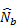
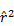

Software Information
In Brief
The NeEstimator V2 software estimates contemporary (or recent) effective population sizes (Ne) from genetic data.
Price: This software is available free for scientific use.
Citation: Do, C., Waples, R. S., Peel, D., Macbeth, G. M., Tillett, B. J. & Ovenden, J. R. (2014). NeEstimator V2: re-implementation of software for the estimation of contemporary effective population size (Ne) from genetic data. Molecular Ecology Resources, 14(1), 209-214.
Release date: February, 2014
Version: 2.01
Format: The user can select Mac, Linux and Windows versions. All versions are 32 bit.
Release notes: This version is a major re-write of NeEstimator version 1.3, which was released June 2004.
More Details
NeEstimator V2 is a tool for estimating contemporary effective population size (Ne) using multi-locus diploid genotypes from population samples. By ‘contemporary’ we mean that the estimates apply to the time period(s) encompassed by the samples.
Four methods are available to calculate Ne; three single-sample methods and one two-sample (temporal) method.
Unlike Version 1, NeEstimator V2 does not include third-party programs; all methods are implemented by NeEstimator V2 code.
The user needs to provide genotypic data in one of the accepted formats (FSTAT, GENEPOP).
The methods are as follows.
Single-sample methods
- The bias-corrected version of the method based on linkage disequilibrium (LD), (Hill 1981; Waples 2006; Waples & Do 2010),
- The method using heterozygote-excess (Pudovkin et al. 1996; Zhdanova & Pudovkin 2008), and
- The method using molecular co-ancestry (Nomura 2008).
Two-sample (temporal) method (Waples 1989)
- The method using moment-based F-statistics; user can choose from three different estimators of F: Fc(Nei & Tajima 1981), Fk(Pollak 1983) or Fs (Jorde & Ryman 2007).
The software provides estimates of confidence intervals for all methods. It is important to recognize, however, that the performance of new methods for confidence intervals implemented in NeEstimator (V2) has not been evaluated.
Estimates of Ne are corrected for possible biases due to missing data according to the simulation study of Peel et al. (2013).
Citing the software
When publishing results based on NeEstimator analyses, you should cite the original methods as well as NeEstimator program note. For example:
“We estimated Ne using the molecular co-ancestry method of Nomura (2008), as implemented in NeEstimator V2 (Do et al. 2014).”
NeEstimator program note
Do, C., Waples, R. S., Peel, D., Macbeth, G. M., Tillett, B. J. & Ovenden, J. R. (2014). NeEstimator V2: re-implementation of software for the estimation of contemporary effective population size (Ne) from genetic data. Molecular Ecology Resources, 14(1), 209-214.
Original methods
Jorde PE, Ryman N (1995) Temporal allele frequency change and estimation of effective size in populations with overlapping generations. Genetics 139, 1077-1090.
Jorde PE, Ryman N (2007) Unbiased estimator for genetic drift and effective population size. Genetics 177, 927-935.
Nei M, Tajima F (1981) Genetic drift and estimation of effective population size. Genetics 1981, 625-640.
Nomura T (2008) Estimation of effective number of breeders from molecular coancestry of single cohort sample. Evolutionary Applications 1, 462-474.
Pollak E (1983) A new method for estimating the effective population size from allele frequency changes. Genetics 104, 531-548.
Waples RS (1989) A generalized approach for estimating effective population size from temporal changes in allele frequency. Genetics. 121, 379-391.
Waples RS, Do C (2008) LDNE: a program for estimating effective population size from data on linkage disequilibrium. Molecular Ecology Resources 8, 753-756.
Zhdanova O, Pudovkin AI (2008) Nb_HetEx: A Program to Estimate the Effective Number of Breeders. Journal of Heredity 99, 694-695.
Minimum Computing Requirements
NeEstimator V2 works on Windows, Linux and Mac operating systems. Java Runtime Environment (JRE) version 6 or above should be present on the user’s computer. Testing was performed on Windows XP, Windows Vista, and Windows 7, Linux Ubuntu 12.04 and Mac OS X 10.6. The software is expected to run on newer releases of these platforms.
Downloading the Software
Software can be downloaded from here.
Contents of the Download
The software is downloaded as a .zip file containing four folders (directories) and a ReadMe file.
Folder: GUI
1) NeEstimator.jar (the GUI)
Folder: Executables
2) Ne2.exe (executable for Windows), Ne2M (executable for Mac) and Ne2L (executable for Linux). Users should implement the correct version for their operating system.
Folder: Data
3) 8Ne50.dat and 8Ne50.gen (test input file)
4) 8Ne50Ne.txt (examples of a basic output file)
Folder: Help
5) Help file (which will also be available from within the GUI in user’s web browser) as a .doc and .html.
6) Accessory files (mathematical details of methods implemented by software [NeCalcul.pdf] and template text files for batch processing of input files [common.txt, multi.txt and multiplus.txt]).
Contact for Problems and Feedback
Please send
- Feedback and suggestions to http://molecularfisherieslaboratory.com.au/contact-us ,
- General questions to Robin Waples (Robin.Waples@noaa.gov) or Jenny Ovenden (zljovend@uq.edu.au)
- Questions relating to running the software to Chi Do (Chi.Do@noaa.gov)
Updates
Check back regularly to the web site to see if the software has been upgraded.
Version Changes
Version 2.01 implements some minor changes
1) A checkbox has been added to allow the user to select whether all alleles regardless of their frequency (ie Pcrit = 0+) are included in the analysis.
2) Some minor improvements have been made to the user interface (when the user chooses to have frequency output file, the previous version does not produce this file unless the user does not enter a number in the textbox reserved for range of populations), and output files (when the user chooses to have tabular-format output files, the user can have tab-delimiter in the format or not by clicking a checkbox).
3) Improvements have been made to running the software in batch mode. Three options are added for running multiple input files with the same settings and same output files. There is also a new system for analysing multiple input files, each of which has its own settings (eg. methods, critical values, and other options).
4) Jackknife confidence intervals using the LD method are not presented when the number of polymorphic loci is over 100 (see “More details on confidence intervals”)
Version 2.0 has been comprehensively updated since version 1.3.
The major changes are
1) Addition of two new single-sample methods and the bias-corrected version of the LD method;
2) Options for three different estimators of F in the temporal method;
3) Versions available for Mac and Linux as well as Windows;
4) Options for screening out rare alleles for all methods except molecular co-ancestry;
5) Implementation of improved routines for dealing with missing data;
6) Greatly increased upper limits for numbers of loci and individuals;
7) Confidence intervals provided for all methods;
8) Comprehensive output files in formats compatible with downstream processing (eg. .xls)
9) Estimation of temporal Ne using plans (sampling schemes) I and II (Nei & Tajima 1981).
10) Methods for running the software using command line and batch processing of multiple input files.
Frequently Asked Questions
Also see here (Once MER manuscript is accepted for publication).
Q: Is there a version of NeEstimator V2 available for Mac or Linux?
A: Yes. The Java GUI is the same for all platforms; it calls a program called ‘Ne2L’ for Linux or ‘Ne2M’ for Mac computers. The user needs to download the correct program for their computer platform.
Q: How do I get a copy of NeEstimator V2?
A: Download the software from the web address above.
Q: How do I get NeEstimator V2 started once I have downloaded the installation file?
A: Download the .zip package and expand it. Among other files, it contains the java executable files “NeGUI.jar”, the help file, the Ne-program for your system:
- Ne2.exe or windows
- Ne2M for Mac
- Ne2L for Linux
The two files “NeGUI.jar” and the Ne-program should be in the same directory in your machine.
Once you have a copy of the installation file on your computer, double-click the icon for NeGUI.jar. You will now be able to use the software.
Q: Can I use my data that are saved in Microsoft Access or Excel?
A: Yes, you can use data from any program as long as it is saved as a text file in one of the accepted formats (GENEPOP, FSTAT).
Q: How do I uninstall NeEstimator?
A: Delete NeGUI.jar ,Ne2.exe, Ne2M or Ne2L for Windows, Mac or Linux respectively, the help file and empty the trash.
Q: How will estimates from the LD method differ from previous implementations?
A: The new implementation of the LD method includes the (Waples 2006) bias correction, which was not included in the version included in NeEstimator V1.3. As a consequence, LD estimates from V2 will generally be lower than those from the previous implementation. If there are no missing data, LD results from NeEstimator V2 should be identical to those obtained from LDNe (Waples & Do 2008). Some differences can be expected if not all individuals have been scored for all loci, as V2 implements an improved method for dealing with missing data.
Q: How large a dataset can V2 accommodate?
A: The capacity for numbers of individuals, loci, and populations are very large, but we cannot at present identify a specific upper limit. We have successfully run the LD method on a dataset with 20-30 individuals and >46,000 diallelic (SNP) loci using the 32-bit version of the software. These analyses required consideration of over 1 billion pairwise comparisons of loci. User feedback on experiences using large datasets would be appreciated.
Q: Is there a 64-bit version of the software?
A: A 64-bit version may be available in the future, if users request it.
Quick Start
Download the zip package from here.
Upack (expand) the zip package. Place into a suitable folder(directory) on your hard drive. Run the NeEstimator V2 software by starting the graphical user interface as followes:
Windows or Mac Users: Double click on the NeEstimator.jar program. There may be a lag of several seconds on the Mac before the GUI appears. Be patient.
Linux Users: From the command line execute: ‘java –jar ./NeEstimator.jar’.
Load an input file using buttons on the interface. Click “Run NeEstimator”. On completion, look for output in the same directory as the input file. This runs all methods using default options. See below or click the ‘Help’ button for details regarding numerous other options.
Using the Software
In brief
The major features of the user interface are shown below.

More details about the user interface
Input data
Choose the desired input data file from the selection displayed in the drop down menu under “Choose File”. An option exists to display only data files with “.TXT”, “.DAT” and “.GEN” extensions.
Format of input data is either GENEPOP” or “FSTAT”. See “About the Input Data Format” below for more details.
When an input file is loaded, the first line appears in the dialog box. Details about the input data (such as the number of loci, the number of populations and the number of individuals per population) are displayed by pressing the “Info” button.
Selecting an analysis method
One or multiple analysis methods for calculating Ne (linkage disequilibrium, heterozygote- excess, molecular co-ancestry or temporal method) can be selected by checking associated boxes in the “Methods” section in the upper right of the interface.
For the linkage disequilibrium method, estimates of Ne are strongly affected by the mating system (random mating or lifetime monogamy) (Waples 2006; Waples & Do 2010; Weir & Hill 1980). If the linkage disequilibrium method is selected the user must define the mating system by checking either “Random Mating” or “Monogamy”; ‘random’ is the default.
If the temporal method is selected, “Populations” in the input file become “Samples” taken at different generations. The default sampling strategy is Plan II; however the user can choose Plan I (Waples 2005). Note that for Plan I sampling, the user must have an estimate of the census population size at the time of the initial sample.
Users can also choose how to calculate the F-statistics; Fc (Nei & Tajima 1981), Fk (Pollak 1983) or Fs (Jorde & Ryman 2007) using the “More Choices” button.
One or multiple methods of calculating F can be selected, in combination with Plan I or Plan II, by choosing the pull-down menu and scrolling up and down.
Temporal method
In brief
A single population sampled at two or more time periods.
For this common situation, the user simply enters in the dialog box the generations corresponding to each sampling event (generation set), beginning with generation 0 for the first sample. For samples taken in generations 0, 3, and 6.5, the entry would look like this:
0,3,6.5 or 0 3 6.5
Estimates will be provided for all possible pairwise comparisons of samples: gen 0 with gen 3, gen 0 with gen 6.5, and gen 3 with gen 6.5
Multiple populations sampled in the same time periods.
If only one set of generation times is specified, it is assumed to apply to all subsequent populations. So, this common scenario also only requires the same type of input as for a single population (above).
Multiple populations sampled in different time periods
In this case, the rules for each population are contained in a ‘generation set’ as described above, with each generation set being separated by a “/”. If fewer sets than populations are provided, the last set will be applied to all remaining populations.
More details
The “?” button (enabled if temporal is checked) provides brief instructions on how to enter generation sets for both plans. If there are entries in the textbox, clicking this button will also evaluate the entries, and list any errors at the bottom of the dialog box. If there are no errors, entries in the textbox will be truncated if it can reduce the length of the currently displayed texts.
The textbox for temporal method analyses on populations sampled using Plan II contains generation sets per population. Generation sets are separated by a comma or blank. Generation sets in subsequent populations are separated by slashes. For example:
0,1 / 0,2
or
0 1 / 0 2
indicates that two populations are present in the input file; the first population was sampled at generation 0 and generation 1 and the second was sampled at generation 0 and generation 2.
If there were more populations in the input data, then generational sets would need to be specified in the same way. If not specified, generation sets in the remaining populations would be assumed to be the same as population 2. Alternatively, a colon could be added (ie ‘/:’) to indicate that sampling for the remaining populations was identical.
The purpose of using colon for repetition is to minimise the entries into the textbox. The user can enter without using colon, if required.
Clicking the question mark button (‘?’) next to the textbox will truncate the entries in the textbox. The truncation performed by the code will use colons for repetitions whenever appropriate; so the user doesn’t need to master them. The examples given here are to help the user to interpret those shortcuts.
For plan I sampling, each generation set is described like plan II, but should be preceded by census size N and a colon (colon serves as a separator of census size and generations). Here, the first whole number greater than 0 indicates the census population size and a colon to separate this parameter from generations sampled (instead of indicating a repetition). Each generation sampled is again separated by a comma or blank. For example
1000: 0, 1
or
1000: 0 1
Suppose this set is the first set entered in the textbox. Then these entries mean that census size for population 1 is 10000 and generation 0 and 1 are sampled.
If more than one population is sampled, populations are again separated by a slash. In the following example, in addition to population one described above, population two has a census size of 500 individuals and was sampled at generations 0 and 2.
1000: 0, 1/ 500: 0, 2
Repeated parameters in populations sampled using Plan I are omitted. If the population census size is the same in population two as population one, but sampled generations differ, census size can be omitted from the text box
1000: 0, 1/ 0, 2 is the same as 1000: 0, 1/ 1000: 0, 2
Similarly, if sampled generations are the same but census size differs, sampled generations can be omitted from the text box
1000: 0, 1/ 500: is the same as 1000: 0, 1/ 500: 0, 1
Note that a colon must still follow the census size 500.
If both census size and sampled generations are the same in population 1 and 2, parameters only need to be defined once followed by a slash to indicate multiple populations and one semicolon to represent the repetition.
1000: 0, 1/ : is the same as 1000: 0, 1/ 1000: 0, 1
Now, suppose all populations afterwards follow the same generation sets as population 2 (identical census size and generation timelines). Then entries for textbox can stop! Note that in case 4 above, generation sets for population 1 and 2 are identical, so the entries in the textbox can be reduced to:
1000: 0, 1
If the user has specified a certain range of populations to process using the population range textbox in “Options” panel, then in temporal method, the range of populations will be interpreted as the range of samples. In such case, the generation sets should apply to the range, starting from the first generation listed in the textbox applying to the first sample in the range. The temporal methods require two samples, so if the last sample (in the input file or in the range of samples) is taken at the first generation, then this last sample has no companion to run temporal method! For example, if there are only 11 samples in input file, all taken at generations 0, 1, then the first 10 samples are for populations 1 to 5, population 6 has sample 11 taken at generation 0, but no sample at generation 1.
Setting critical values
The option for screening out rare alleles at various frequencies is available for all methods except molecular co-ancestry. The presence of rare alleles does not bias the results of this method (T. Nomura, personal communication).
The rare-allele screening option using critical values is intended to facilitate evaluation of the effects of low frequency alleles on estimates of effective size, which have been documented for both the temporal and linkage disequilibrium (LD) methods and are likely to also apply to the heterozygote-excess method.
The default values of Pcrit are 0.05, 0.02, and 0.01; however, these values can be changed manually or new values added. User-defined Pcrit values are rounded off up to 3 decimal places before being added to the list. Therefore, 0.001 is the smallest increment for critical values. The maximum number of Pcrit values is nine. By default, the program also calculates results for all methods using all alleles (reported as Pcrit = 0+). The 0+ option can be turned off in command-line runs as described below.
Alleles are excluded only if they occur at frequency LESS than PCrit; therefore, all alleles whose frequencies are equal to or greater than the specified value of Pcrit will be used in the analysis. For the LD method, it is important to set PCrit high enough to exclude alleles that occur in only a single copy (in one heterozygote) in the sample. This can be accomplished by ensuring that PCrit > 1/(2S), where S is the number of individuals with data at both pairs of loci. Note that S can vary among loci when data are missing. This same criterion might be important for other methods, but that has not been evaluated.
Options panel
In brief
Subsamples of populations or loci for analysis can be defined in the “Options” panel by selecting associated checkboxes. This can be used to reduce excessive output file size and to allow the user to generate one or more specific files tailored to their analyses. The user can also select to omit confidence intervals from output files.
The options include defining which populations to include in the analyses by checking “Population range to run” or “Up to Individual per population”. The first option defines the range of populations to run. The second option defines the maximum number of individuals per population to be processed. Values for both parameters are entered in the small text boxes adjacent to each option.
More details
The user can control the loci used in an analysis in two ways. “Omitting Loci” is used when there are only a handful of badly scored loci to be omitted, which are likely to be scattered in the input data, and not consecutive. Alternatively, “Ranges” are used when the user wants to choose a particular subset of loci to run.
If the “Ranges” option is chosen, the textbox should contain at least one range of loci, which should consist of two numbers separated by a dash and two spaces. For example, if loci from 20 to 40 (inclusive) are desired, ‘20 – 40’ is entered into the adjacent textbox. Several ranges can be entered and should be separated by commas or blanks. It is not necessary to enter ranges in the sequential order, as long as each range is legitimate (i.e., the second number is greater than or equal to the first). A number between 2 dashes is considered an error. A single number is the same as a range of two identical numbers connected by a dash.
When “Restrict Loci by” is checked, the restriction can be implemented either by specifying the range of loci to be used, or the loci to be removed. Clicking the “?” button next to “Restrict Loci by” will open a dialog box with instructions to correct any error. If textboxes are free from errors, texts in these textboxes will be truncated. For example, if the ranges of loci are entered in a disorganized fashion:
8, 1 6, 3 2-9, 5-12, 25, 14-20
clicking the “?” button will bring the text into a more readable one:
1-12,14-20,25
To clarify, these entries mean the following loci (in the order they are entered) are included:
- Loci 8, 1, 6, 3
- Loci from 2 to 9 (inclusive)
- Loci from 5 to 12 (inclusive)
- Locus 25
- Loci from 14 to 20 (inclusive)
We can see that loci cited in (a) are also in (b) except locus 1. Loci cited in (b) and (c) have common loci from 5 to 9, so together, (a) – (c), we have loci from 1 to 12. This is an extreme example that is unlikely to be entered by the user. It is used to illustrate that the user can enter ranges, loci, without regard to the order or overlapping.
Setting output file location and name
Output files will be placed in the same folder as the input file, unless a different location is selected using the “Browse” button.
The output file name will be the input file name (less extension) plus the abbreviation of that method. For example, if the input file is “MyFile.gen” and only the linkage disequilibrium method in chosen, the output file will be “MyFileLD.txt”.
Either accept the default output file name, or uncheck “Use Default Name (uncheck to edit)” to type a new file name.
The output file and tabular-format output files (see below) can also be appended (i.e. as part of successive analyses on the same input file) by selecting the associated checkbox.
Selecting additional output files
In brief
Additional output files can be selected by checking associated boxes. For example, the user can select output files in tabular format, were each method is reported in a separate output file and is easier to view on screen.
More details
Selecting critical values
The user can also define which critical values to include in tabular output files by defining “only for the top” critical values, again reducing unnecessary output file size. Only one digit can be entered in this textbox. If a positive number m is entered in this box, then the first m critical values in the list, counted from the highest one, will be outputted. If the box is left empty, all critical values (including 0) are outputted.
For example, if the values listed in “Critical Values” panel are 0.05, 0.02, 0.01 and the user selects to include only the top “1” critical value, then only results calculated with critical value 0.05 (the highest) will be listed in the corresponding files. If the user selects a number greater than the number of critical values listed (in the example, > 3), then results will be listed for all critical values (including 0), the same result that would occur if the textbox were left empty.
Outputs for Burrows coefficients and allele frequencies
These optional output files can be very large, so the program only prints results for a maximum of 50 populations. By default the first 50 populations are used, but the user can specify a different number in adjacent text boxes. The user can enter either a single number representing one population or two numbers separated by a dash to indicate the range of populations to be analyzed. Only one range is allowed.
As for additional output files in tabular format, the user can limit
- Critical values in the tabular format output files for all methods to be run.
- Critical values to be imposed on the Burrows output file (i.e., LD method only).
There is no limit of critical values on freq. output file since this file is not very large. However, frequency data can only be generated for a maximum of 100 loci.
The users are notified if any errors are encountered when “Create Parameter Files” (see below) or “Run Ne” is clicked. An error occurs, for example, if there is no population in the specified range (e.g., if the input file contains only 10 populations, but the user enters ‘12’ in the textbox for “Population range to run” in the “Options” panel). If the user enters ‘10-12’ instead, this is not considered an error, but only population 10 will be run. Another type of error occurs if, for example, the user enters ‘3-5’ in the textbox for “Population range to run” but then enters a different, non-overlapping range (e.g., ‘1-2’) in a subsequent textbox (e.g., for an additional output file describing frequency data at each locus.
Default output file names
A default output file name (which cannot be changed) is generated for each additional output file. For output files in tabular format, this consists of the prefix of the output file name (without path name) with an additional letter “x” and abbreviation of reported analyses, added. For example if the input file name is “MyFile.gen”, then additional output files in tabular format for the linkage disequilibrium, heterozygote excess and molecular ancestry are “MyFileNexLD.txt”, “MyFileNexHt.txt” and “MyFileNexCn.txt”, respectively (assuming default main output name “MyFileNe.txt” is in effect).
Burrow output files containing values for each locus pair and detailed locus information for each population and analysis method are named from the prefix on the input file name combined with an output specific prefix. In the above example generated additional output file names would be “MyFileBur.txt” and “MyFileLoc.txt” respectively.
Outputting missing data
If the input file has missing data, details of the missing data for each population will be reported in a file whose name is taken from the prefix of the input name, and added "NoDat.txt." For example, if input name is MyFile.gen, then this file is named "MyFileNoDat.txt" and will be placed in the selected Output Directory.
Parameter files
The user can also choose to “Create Parameter Files” (in the same directory as the .exe) for running from the command line. The preset default names for these files are “info” and “option”. A pop-up dialogue will ask the user to confirm before any overwriting of files. The pop-up also provides instructions on how to run Ne Estimator as command line.
Running NeEstimator
Click “Run NeEstimator” to run the selected analyses. Updates are provided in a box on the screen.
Computations on large datasets may take time. If no error message is given, and if the update box is still open, it is likely that the program is still running.
In general, the temporal and heterozygote excess methods will run quickly even with very large files. The LD method slows with large numbers of loci (>>1000), especially for samples that include large numbers of individuals (>100). The molecular coancestry method is very slow for large numbers of loci. Therefore, users with large datasets are encouraged to first try the analyses with reduced sets of loci, individuals or populations before running their full datasets.
A message stating “Ne is finished running…….” notifies user when analyses have finished. If the input file is not in proper format, no output file will be created.
Dealing with errors
If there are invalid entries in textboxes for temporal generation sets, or in text boxes at the “Options” panel, a dialogue pops up indicating where the errors are located. The user should correct these before clicking the “Run Ne” button. If the user clicks “OK” the analyses will proceed without the options containing errors.
The software interface will not report errors on the screen after the “Run Ne …” is clicked.
When the run button is clicked, some internal error checking for consistency takes place, such as the number of loci, populations. Other errors (such as letters instead of digits in the genotypes) will be detected and reported in the missing data files, and the program will cease abruptly.
Input Data Files
In brief
The software accepts genotypic data in the format used by GENEPOP (Morgan 2000; Raymond & Rousset 1995; Rousset 2008) or FSTAT (Goudet 1995).
A test input data file is provided with the downloaded software package.
More Details
Types of genetic marker data
The software produces estimates of Ne from individual genotypes at diploid nuclear loci, such as microsatellites and SNPs.
Example data input file
Test datafiles (8Ne50.dat and 8Ne50.gen) with eight samples is provided with the software download. It was generated in Easypop using a procedure similar to that used for the temporal comparisons described in the Program Note. A metapopulation with eight subpopulations was simulated and genetic data were tracked for 20 msat loci. Each subpopulation was randomly mating with Ne = 50. Initially, migration rate was at a level (m = 0.875) that caused the entire metapopulation to be panmictic. Five generations before collecting samples, all migration was stopped, so the subpopulations became isolated. The single-sample methods should therefore estimate an Ne of ~ 50, with perhaps a bit of upward bias for the LD method due to effects of the larger Ne in recent generations. Any pair of samples is separated by 10 generations of drift (five in each lineage). Therefore, temporal estimates for any pair of samples using t = 10 should also approximately be equal to 50. Random variation in rates of drift and sampling error of course will influence the distribution of the estimates as well.
Input data format
Input data must be in either GENEPOP or FSTAT format. Alleles should be described by one to five digits. The program can handle more digits than three, but that is the max used by GENEPOP.
For the single-sample methods (linkage disequilibrium, heterozygote-excess, molecular co-ancestry), populations are represented as single samples (collections of individuals that will be analysed as a group). A single input data file can include data from an arbitrarily large number of populations, just as in a typical GENEPOP or FSTAT file (details on these file formats given below).
For the two-sample (temporal) method, populations must contain at least two samples or groups, and like the above method, multiple populations can be included in a single file. Format of the input file is the same as for single-sample methods; however, if the temporal method is chosen, the user must indicate both the number of samples from each population, as well as the corresponding generations to be analysed (see “Methods” panel).
If both single-sample methods and temporal methods are run on the same input file, the single- sample methods treat each sample as a ‘population’, while the temporal method analyses the data as described above.
The format of the data file can be checked for compatibility before analysis. Select the data file and click on ‘Info’. If the data are not in the correct format, a message will appear.
GENEPOP data format
This data format is the same as that used by the program GENEPOP. In this format, the first row can contain any characters and is often used as a title row or to store information about the data. The subsequent lines contain the names of each locus analysed. Multiple loci can also be stated on the one line separated by commas. The first data column can be the individual’s label, followed by columns for each locus. The per-locus genotypes are given as single numbers (i.e. no space between the allele values). For example, the number 100200 denotes the allele values 100 and 200 at this locus. The data must be diploid (that is, there are two allele values per locus for each individual). Genotypes for each locus are separated by one or more blank spaces. Populations are separated by ‘pop’. GENEPOP input data files should have the extension ‘.gen’.
Below is an example of data formatted in this manner.
EXAMPLE:
Test data file
Loci1
Loci2
Loci3
pop
Ind1, 1111 2124 3232
Ind2, 1113 2727 3538
Ind3, 1315 0000 3838
Ind4, 1313 2127 3238
The header line contains the title for the file.
The example data set has three loci and four individuals. Each allele value is, in this case, two characters (digits) long. The first locus has allele values of 11, 13 and 15. The second locus has allele values of 21, 24 and 27. The third locus has allele values of 32, 35 and 38. Each locus has homozygous and heterozygous values. “1111” is homozygous as both allele values are 11. “3238” is heterozygous as the first allele value is 32 and the second is 38.
Each row begins with a label for the individual whose data is contained on that row. There is one missing data value, denoted by “0000”. That is, the allele values (both first and second) could not be ascertained for the third individual at the second locus.
FSTAT data format
In this format, the genotypic data are similarly represented; however, the first column indicates the population number for each individual and is not followed by a comma. The word ‘pop’ is not used between populations.
EXAMPLE:
10 5 10 2
loc-1
loc-2
loc-3
loc-4
loc-5
1 0110 0807 0902 0901 0101
1 1003 0808 0701 0908 0907
1 0605 0808 0209 0107 0808
1 0305 0808 0102 0107 0108
1 0503 0108 0103 0902 0807
1 0510 0607 0110 0903 0107
The header row must include
- The number of populations (=10)
- The number of loci (=5),
- The maximum value for allele designation (=10),
- Number of digits used to describe each allele (=2).
Missing values
Input data can include missing allelic determinations (00 for one-digit alleles, 0000 for 2-digit alleles, or 000000 for 3-digit alleles). No other states for missing data (eg XX, ??) are permitted. The program will accept one allele scored and the other not (i.e. 0012) however, this partially scored genotype will be considered as missing data, same as 0000.
Missing data, which occur in virtually every real dataset, present a thorny issue for population genetic analyses because the sample size of individuals varies across loci, and this requires careful consideration to determine the best way to minimize bias and maximize precision. This applies most directly to the moment-based linkage disequilibrium and temporal methods, where the expected contribution to F or  from sampling error is subtracted to get an adjusted value before calculating Ne.
from sampling error is subtracted to get an adjusted value before calculating Ne.
Based on findings from a simulation study (Peel et al. 2013), the software implements a fixed-inverse variance-weighted harmonic mean correction for missing data for the linkage disequilibrium and temporal methods (refer to methodological outlines below).
The new method for correcting for missing data calculates

or for each locus or locus pair (using the sample size for that locus) and then computes a weighted harmonic mean effective size across all loci, with weights proportional to the number of independent comparisons. If sample size is identical across loci, this should produce a result identical to previous methods (eg Waples & Do 2008).
for each locus or locus pair (using the sample size for that locus) and then computes a weighted harmonic mean effective size across all loci, with weights proportional to the number of independent comparisons. If sample size is identical across loci, this should produce a result identical to previous methods (eg Waples & Do 2008).
When the amount of missing data varies across loci, the new method seems less prone to bias, since each single-locus or locus-pair estimate is in theory an unbiased estimate of the same parameter. The new method outperformed the simple weighted mean that was implemented to correct for presence of missing data in version 1.3 of NeEstimator (Ovenden et al. 2007), as well as a simpler version of the inverse-variance method implemented in LDNe (Waples & Do 2008).
Output Data Files
In brief
Once the analysis has successfully run, the output files will appear in the same directory as the input files unless otherwise defined (refer “Output” panel).
The output files are presented in text format. Refer to “Output” panel for description of names for output files.
More details on the content of output files
Output files begin with a header description containing the file title, starting time of analysis and input file name. The number of loci included in the analyses is also stated and any loci removed or dropped, or population subsamples as defined by the user in the “Options panel”
If both single and two-sample methods are selected, single-sample results are presented first. For these results, each population is presented in consecutive tables organized by selected analysis methods. The population name and number of individuals sampled is reported. Rows represent parameters Ne estimates and confidence intervals (unless the user has selected not to report intervals).
Results for each Pcrit value defined in the “Critical Values” panel prior to analysis are reported in the columns (“0 +” uses all alleles regardless of frequency).
For two-sample methods, the term “population” refers to samples (temporal replicates taken from a single population). As such, “population 1/2” reported in an output file actually refers to two generations (defined by the user) sampled within the same population. These are defined at the top of the results table.
For example, “Samples 1 [1] & 2 [2]” followed by “Generations 0.0 & 1.5” refers to the comparison of two samples. The numerals without being enclosed in square brackets are the order of the samples taken at different generations for a particular population. The numbers enclosed in the brackets are the identities of the samples in the input file (where only the last few characters are shown). In this example, it happens that these identities are given in numerals too. In general, these identities may be strings of letters and numerals. In this example, sample 1 is population 1 from the input file and the second sample is population 2 from the input file, representing generations 0.0 and 1.5 (defined by the user) sampled from the same population.
A title line states the number of samples and sample sizes analysed, followed by a table organized by the F-statistic (Pollak, Nei/Tajima, Jorde/Ryman) calculated. Again, columns represent parameters, Ne estimates and confidence intervals (unless the user has selected not to report intervals) for each Pcrit value as described above.
More details on the content of additional output files
If the user has selected additional output files, these will appear in the same directory as the above output file. In these files, the results tables are presented differently than in the generic output file described above. Here, each column represents sample pair, generations, method parameters (Pollak, PK; Nei and Tajima, NT; and Jorde and Ryman, JR), Ne estimates and confidence intervals (unless the user has selected not to report intervals). Results for each Pcrit value are reported in the rows.
The user can choose two different formats for tabular-format output files. If “Output Files in tabular format” is checked, the output file can be easily imported into an .xls file. If the box is unchecked, the files are not optimized for import into Excel, but the text will display easily on screen.
“Output file for Burrows coefficient in linkage disequilibrium method” reports loci-specific frequency data and parameter estimates for each population in consecutive tables organized by Pcrit values.
“Output file for Frequency Data at each locus” again reports each population separately. Specific allelic diversities for each locus within a population are described first. Details of the number of alleles and individuals sampled at each locus and correspondingly locus-specific linkage disequilibrium and heterozygote-excess data for each Pcrit value follow.
And lastly, locus-specific frequency and parameter estimates for the molecular co-ancestry method are reported.
More details on confidence intervals
Types of confidence intervals
Confidence intervals (CI’s) are provided for all methods. For the linkage disequilibrium and temporal method, parametric confidence intervals are based on the chi-square approximation described in Waples (1989) (temporal, Waples) and Waples (2006) (linkage disequilibrium, Waples). We also provide a type of parametric confidence interval for the heterozygote-excess method, which is mentioned briefly in Zhdanova & Pudovkin (2008).
Jackknife estimates of confidence intervals are also presented for the temporal and linkage disequilibrium (Waples & Do 2008) methods and were developed here specifically for the molecular co-ancestry method.
Parametric compared to non-parametric confidence intervals
Users should note the difference between confidence intervals around Ne estimates estimated using the chi-square (i.e. parametric) or the jackknife (i.e. non-parametric) method.
The chi-square method is the standard way of calculating confidence intervals based on the theoretical distribution of mean or mean

under the assumption that the estimates for individual loci or pairs of loci are independent. This assumption is always violated for the LD method because of overlapping sets of loci involved in considering all possible pairwais comparisons (locus 1 vs 2; locus 1 vs locus 3; locus 2 vs locus 3; etc.). At present there is no general way to quantitatively account for this by adjusting the degrees of freedom.The jackknife confidence intervals for the LD method attempt to estimate the actual variance of and are generally narrower than chi-square confidence intervals.
The software outputs both types of confidence intervals and allows the user to make the decision between methods.
As the number of loci becomes very large, several things occur that are relevant to confidence intervals. First, jackknife CIs for the LD method become computationally intensive and converge on the parametric CIs, which limits their usefulness. Because of this, we do not present jackknife CIs for the LD method if the number of loci exceeds 100. Second, as the number of loci increases, the common assumption that none are physically linked becomes increasingly untenable, because they all have to be packaged into the same small number of chromosomes. Physical linkage introduces important issues related to pseudo-replication that have not been evaluated quantitatively. As a consequence, parametric confidence intervals based on large numbers of loci will generally be too narrow because the effective degrees of freedom is not as large as assumed. This effect is likely to be particularly important for CIs for the LD method because of the overlapping-pairs issue described above. Unfortunately, at present it is not possible to quantify the reduction in effective degrees of freedom so that accurate CIs can be reported for estimates based on large numbers of loci. Users should therefore be aware that CIs reported for estimates based on large numbers of loci are probably too narrow. We are conducting research that might be able to provide quantitative adjustments for this effect in the future.
Jackknifed confidence intervals and missing data
The software takes a parsimonious approach to calculating jackknife confidence intervals on linkage disequilibrium estimates in the presence of missing data. Jackknife CI’s are calculated by dropping one locus or locus pair and repeating the previous step many times; however, the same starting estimate of Ne is used each time. Theoretically, the starting estimate of Ne should also be recalculated each time with the appropriate locus or locus-pair dropped. But, this is not done due to the computing time required, particularly for large numbers of loci.
Physical linkage between loci
Confidence intervals for all methods assume that the loci assort independently. As noted above, if some pairs of loci are physically linked, the data contain less information than assumed and the confidence intervals will be too narrow. Physically linked loci would in general also downwardly bias estimates of Ne from the LD method. The consequences of these departures from the assumption of independent assortment have not been rigorously evaluated, but doing so will become increasingly important as the number of loci rapidly increases in genomics datasets.
Negative or infinite estimates of Ne
Each method estimates Ne based on the magnitude of a genetic characteristic, after accounting for the expected contribution from random errors in sampling. For example, in the temporal and linkage disequilibrium methods, the contribution to or expected to arise from sampling S individuals is approximately 1/S. To obtain an unbiased estimate of the genetic index, this amount attributed to sampling is subtracted from the raw estimate. Because the actual contribution of sampling error is a random variable, it can be smaller than the expected value, and when that happens subtracting the expected contribution can produce a negative estimate of adjusted or , which in turn produces a negative estimate of Ne. This also can occur with unbiased estimators of FST or genetic distance.
The usual interpretation in this case is that the estimate of Ne is infinity – that is, there is no evidence for variation in the genetic characteristic caused by genetic drift due to a finite number of parents — it can all be explained by sampling error.
In the confidence intervals (CIs), such values are reported as ‘Infinite,’ meaning that the confidence interval includes infinity. However, the point estimates of Ne are reported even if they are negative (in accessory output files), as in some applications this information can be useful.
For example, say you have several replicate samples from the same population and use each sample to estimate Ne. An overall estimate of Ne can be obtained by taking the harmonic mean of the separate estimates, even if they are negative. You will get an approximately, but not exactly, correct answer if you replace negative estimates of Ne with infinity before taking a harmonic mean. This issue is discussed in Waples and Do (2010).
Running NeEstimator V2 from the Command Line
In brief
The command line provides computer-savvy users with an alternate way of running the software.
More details
Parameter files
This section explains the correspondence between inputs from textboxes on the GUI interface and inputs into parameter files. The “Create Parameter Files” button enables the user to create parameter files describing the analyses defined in the GUI interface.
Parameter files will be created in the folder of the GUI, and named “info” and “option”. The “option” file will be created or overwritten if certain options in the GUI are selected. The dialog box that pops up when the button is clicked includes instructions for running in the command line. The menu item “Open Terminal for Command” in “Run” menu will launch a terminal for the user to type in command line as instructed by the dialog box.
Analysis parameters defined in the “Input”, “Methods”, “Pcrit” and “Output” panels of the GUI interface are described in the “info” file. Whereas parameters defined in the “option” and “Additional output files” panels are described in the “Options” file.
Instructions explaining each line are also included in the files.
Experienced users can directly modify the parameter files as required and run the analyses using command line instead of the GUI interface.
Running multiple input files
There are two analysis modes depending on the need of the users, corresponding to separate batch files. Examples of these batch files (“multi.txt” and “multiplus.txt”) are included in the downloaded .zip package. These text files start with a few examples, then at the end, detailed instructions. These files can be used as templates.
The simple mode (e.g. “multi.txt”) allows users limited analysis options. For each of the multiple analyses in the batch file, the user defines:
- Any or all methods.
- Critical values.
- Only one plan (I or II), and one generation set for temporal methods to apply throughout each input file (unlike in the GUI interface).
- Only main output file (no tabular-format file).
The enhanced mode (e.g. “multiplus.txt”) adds more options. However, again, only one generation and one sampling strategy i.e. Plan I or Plan II can be entered for each input file. Also, no Burrow coefficients or Frequency Data output files are generated due to excessive file size. Additional options allow users to:
- Add tabular-format file for any or all methods specified to run.
- Restrict number of individuals per population.
- Restrict populations by specifying a range.
- Specify if Confidence Intervals are desired.
- Specify Random mating or Monogamy model in LD method.
- Omit loci.
Output files for both modes can be set to be appended, including tabular-format files in preferred mode. Suppose batch files are “multi.txt” for the basic mode and “multiplus.txt” for the preferred mode, then the following command lines should be issued (assuming the user already opens a command shell at the directory where all files are located):
- Simple mode:
Windows: Ne2 m:multi.txt
Mac: ./Ne2M m:multi.txt
Linux ./Ne2L m:multi.txt
- Enhanced mode:
Windows: Ne2 m+:multiplus.txt
Mac: ./Ne2M m+:multiplus.txt
Linux ./Ne2L m+:multiplus.txt
Note that there is a plus sign before the colon in preferred mode.
The user should have the executable (Ne2 in Windows, Ne2M in Mac, and Ne2L in Linux), all input files to run, and a batch file in the same directory.
An option also exists for running multiple files with the same settings: Same method(s), critical values, one generation set for temporals, mating model for LD, outputs for CI or not, and tabular-format output files. All input files are outputted in the same output file(s), the main output as well as the tabular-format output files. If the file name is “common.txt”, then the commands will be:
Windows: Ne2 c:common.txt
Mac: ./Ne2M c:common.txt
Linux: ./Ne2L c:common.txt
Acknowledgements
We thank Per Erik Jorde, Tetsuro Nomua, Alexander Pudovkin, and Oxana Zhadanova for reviewing and confirming the accuracy of implementations of their methods. We also are indebted to our cadre of BetaTesters, who diligently evaluated earlier versions of the software and provided valuable comments and feedback (Tiago Antão, Dean Blower, Mark Christie, Christine Dudgeon, Jon Hesse, Wes Larson, Greg Maes, Friso Palstra, Ivan Phillipsen, Malin Pinsky, and Ryan Waples).
References
Morgan E (2000) Genepop on the web. Curtin University of Technology, Perth, Australia.